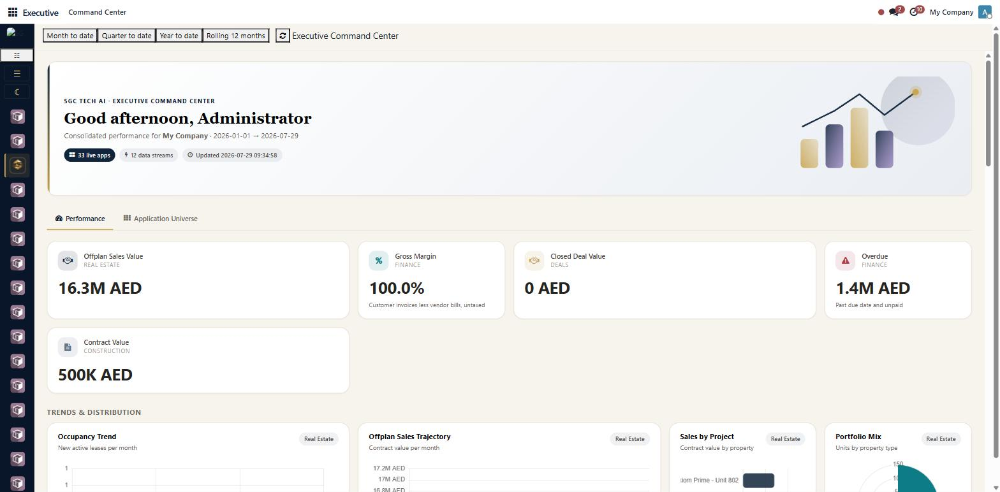
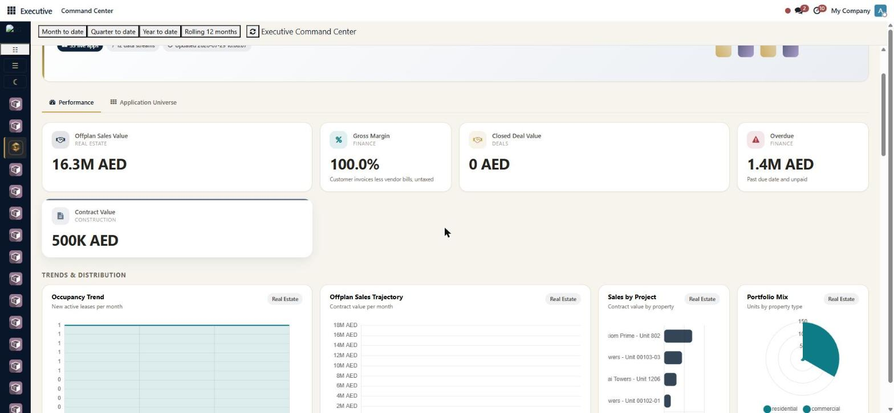
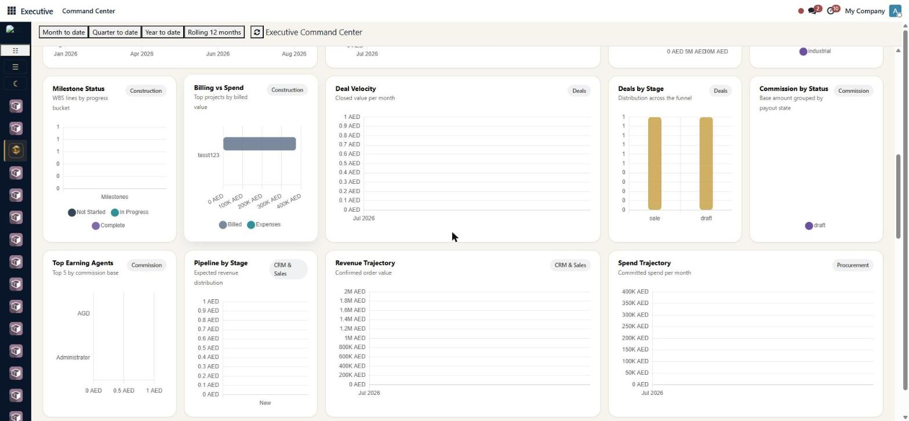
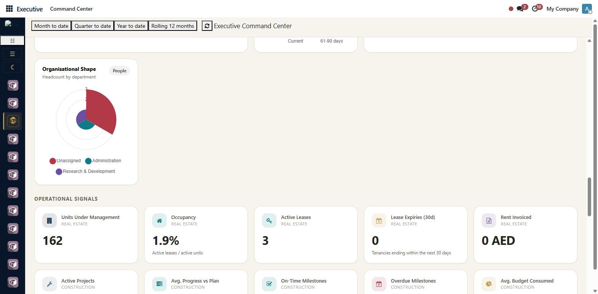
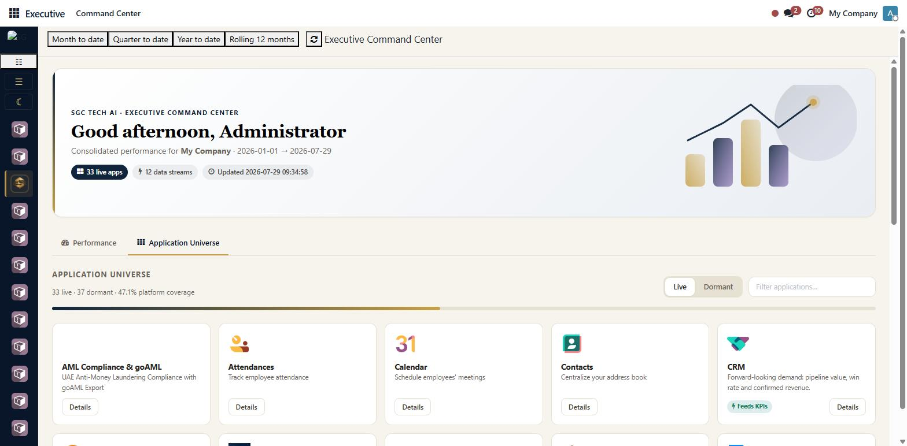
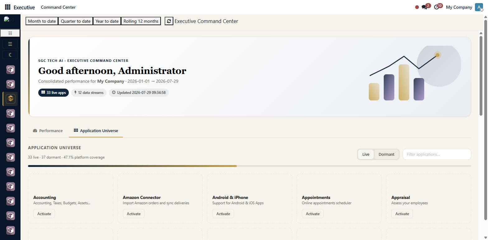
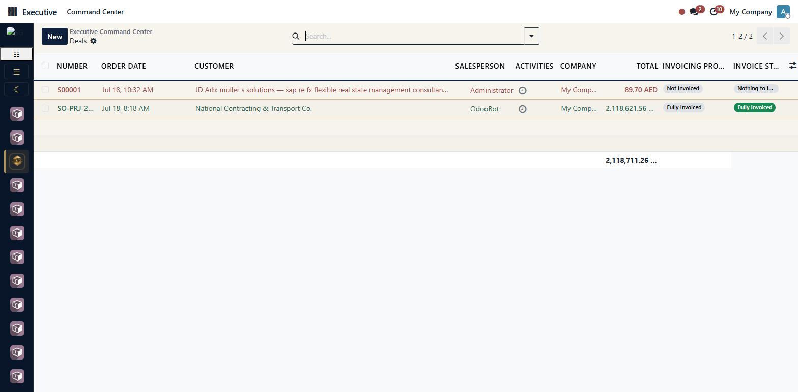

Why this module
Built on a provider-registry architecture: every domain declares its own KPI collection against the real Odoo module it needs. The aggregator walks the registry at runtime, so applications that aren't installed become opportunity tiles, not errors — the right UX for a C-level view across the entire estate.
What's inside
- Hero KPI band — promoted, high-signal metrics across the period selected.
- Trend & distribution charts — Chart.js line, bar, doughnut and polarArea cards, fed by Odoo ORM aggregates.
- Drill-through — click any KPI to open the underlying list view, pre-filtered.
- Application Universe — every Odoo app, installed or dormant, with one-click activation for administrators.
- Period selector — Month / Quarter / Year to date / Rolling 12 months / custom.
- AI Command Layer (v1.1) — one-click preset chips, free-text business questions, a 2σ anomaly scan, and a global
/sgcaicommand palette (Ctrl+K). Every AI response is read-only and constrained by a hardcoded Python allowlist — see "Safety" below.
Domains instrumented in v1
Units, offplan sales, leases, expiries.
Projects, progress, budget, NCRs.
Pipeline, closed value, velocity.
Liability, payout state.
Pipeline, win rate, revenue.
Spend, approvals.
P&L, ageing, AML, UAE e-invoicing.
Headcount, WPS, attendance, leave, reqs.
Completion, expiring docs.
Workload, overdue.
Completion, certificates, assessment.
Meeting cadence.
See it in action
Real screenshots captured from a live Odoo 19 install — nothing mocked.

Hero KPI band. A consolidated performance header (live-app count, data-stream count, last-updated timestamp) with a Month/Quarter/Year-to-date/Rolling-12-months period selector, followed by the highest-signal KPI cards pulled from whichever domains are installed — for example Offplan Sales Value, Gross Margin, Closed Deal Value, Overdue Receivables and Contract Value.

Trends & distribution charts. Chart.js line, bar and doughnut cards per domain — occupancy trend, offplan sales trajectory, sales-by-project and portfolio mix are shown here for the Real Estate provider; every other installed domain renders its own trend/distribution row in the same section.

Cross-domain chart gallery. Construction (milestone status, billing vs. spend), Deals (velocity, pipeline by stage), Commission (payout status, top earning agents), CRM & Sales (revenue trajectory) and Procurement (spend trajectory) charts all sit side by side in one scrollable gallery.

Operational signals. Below the charts, a row of compact operational KPI cards — Units Under Management, Occupancy, Active Leases, Lease Expiries (30d), Rent Invoiced for Real Estate; Active Projects, Avg. Progress vs. Plan, On-Time Milestones, Overdue Milestones, Avg. Budget Consumed for Construction — plus an Organisational Shape headcount-by-department chart from the HR provider.

Application Universe — live. A second tab lists every Odoo application on the database with a live/dormant split and platform-coverage percentage; installed apps that feed a KPI provider are tagged “Feeds KPIs”.

Application Universe — dormant. Not-yet-installed apps render as opportunity tiles with an Activate action, visible to administrators only — this is what lets the dashboard degrade gracefully on any Odoo 19 database instead of erroring.

Drill-through. Clicking a KPI card opens the underlying Odoo list view, pre-filtered to that KPI's domain — here, a Deals KPI opens the filtered sale-order list with number, customer, salesperson, total and invoicing status columns.
AI Command Layer (v1.1)
An AI bar at the top of the Command Center adds three entry points:
- One-click preset chips — five bundled commands (Board Pack Summary, Cash & Collection Risk, What Looks Wrong?, Pipeline Health, Why Did Revenue Move?). The "What Looks Wrong?" chip is marked Instant: 2σ statistical scan across every saved KPI definition, no LLM call, returns synchronously.
- Free-text question box — type "why did margin drop", "top 10 late customers", "brief me on this period" and press Enter. The dashboard classifies the verb (metric/compare/explain/anomaly/etc.) and routes the request to the configured AI provider.
- Global
/sgcaicommand palette (Ctrl+K) — open from any Odoo backend screen, not just the dashboard. The palette stays cheap while you type (only a classifier call, no LLM round-trip) and opens the Command Center pre-loaded with the answer on Enter.
Safety
The AI layer is read-only and constrained by a hardcoded Python allowlist (sgc.capability in the module source). Concretely, an LLM response can never:
- Query a model not on the allowlist (
res.users,ir.config_parameter,stock.picking,mrp.production, etc. are explicitly rejected). - Read a field the allowlist doesn't list for that model.
- Bypass the company scoping or the date window — both are server-forced.
- Use a dangerous operator (
any,inselect,child_of,parent_ofare rejected at the validator). - Write anything — the AI surface is read-only at the ORM level.
The module ships 18 table-driven rejection tests in tests/test_ai_dynamic_security.py that continuously verify the allowlist and validator. 5 narrative presets ship out of the box (the existing sgc_ai.* System Parameters from sgc_ai_powerbox are reused — no duplicate configuration work).
Branding & access
Built on SGC TECH AI's navy + gold + cream brand system. Access is gated by Executive Viewer and Executive Officer security groups (Settings → Users → SGC Executive).
Author: SGC TECH AI · sgctech.ai · info@sgctech.ai
Compatible with Odoo 19.0 Community & Enterprise. No hard dependencies on any business module — instruments only the apps present in your database.